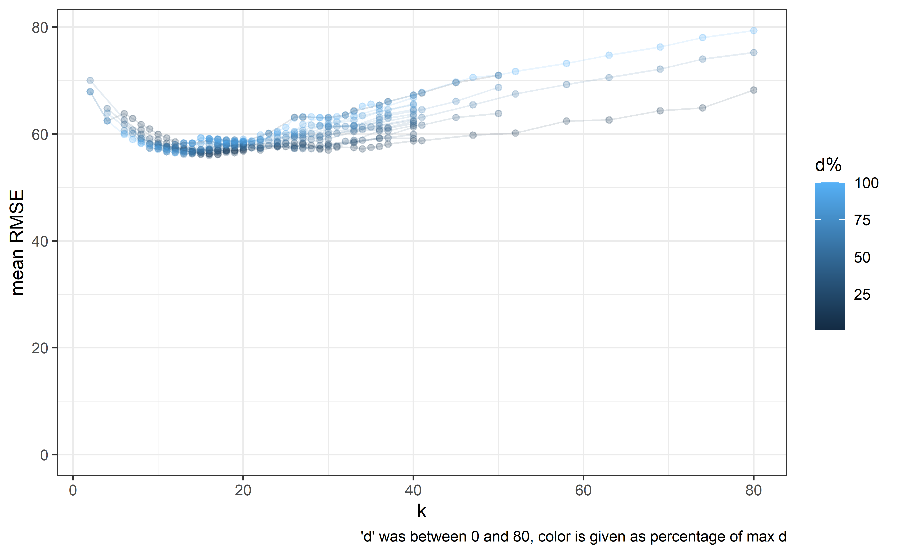

splines_vignette.rmdI have an excel file with all of my (known) recorded weights including te ones I recorded when I was into (extended) intermittent fasting. I want to fit an intuitive model describing my mass as a function of time.
I’m using natural splines with a set method for determining knot placements; I’m setting a knot after ‘n’ days of valid observations.
Next steps are to determine the ‘best’ value for ‘n’.
I’m also not sure whether mixed modelling is the best approach here.
My long term motivation is to both build a descriptive model of my weight and also to build a predictive model(ling technique) to forecast my weight for the next 30 days in the hopes of my recent changes to inform the model what can be expected medium term given a constant set of behavior.
##
## Attaching package: 'dplyr'## The following object is masked from 'package:nlme':
##
## collapse## The following objects are masked from 'package:stats':
##
## filter, lag## The following objects are masked from 'package:base':
##
## intersect, setdiff, setequal, union##
## Attaching package: 'lubridate'## The following objects are masked from 'package:base':
##
## date, intersect, setdiff, union
setwd(here::here())
#setwd("~/V2 Docs/R Git/Martysweight/spliney")
#####
k <- 20
#####
dat <- here::here("inst","extdata","martysweight.xlsx") %>%
readxl::read_excel( col_types = c("date", "numeric", "numeric",
"numeric", "numeric", "numeric","numeric")) %>%
filter(is.na(Mass) == FALSE) %>%
mutate( Time_hours = ifelse( is.na(Time_hours)== TRUE, 12, Time_hours),
Time_minutes = ifelse( is.na(Time_minutes)== TRUE, 0, Time_minutes),
Time_fasted_hours = ifelse( is.na(Time_fasted_hours)== TRUE,
4, Time_fasted_hours),
Time_fasted_minutes = ifelse( is.na(Time_fasted_minutes)== TRUE,
0, Time_fasted_minutes),
numd = as.numeric( Date
+ Time_hours * 3600
+ Time_minutes * 60
- min(Date)) / 24,
fastd = Time_fasted_hours + Time_fasted_minutes / 60,
fastd_truncated = ifelse( fastd > 16, 16, fastd),
maxinlast = 0
) %>%
arrange(., numd)
##########
# Episodes setup
# Assuming 'dat' is your data frame
dat <- dat %>%
mutate(
fast_start = round((numd - fastd /24)*7
, digits = 1)/7,
fast_diff = fast_start - lag(fast_start)
)
# Initialize the first episode
act_episode <- 1
dat$Episode[1] <- 1
# Loop through the rows to assign episodes
for(i in 2:nrow(dat)) {
if ( dat$fast_diff[i] > 0.5) {
act_episode <- act_episode + 1
}
dat$Episode[i] <- act_episode
}
# Convert 'Episode' back to factor if needed
dat$Episode <- as.factor(dat$Episode)
##########
knot <- c()
dayswithdp <- 0
days <- floor( dat$numd)
for (i in seq(1,max(floor(dat$numd)))) {
if(dayswithdp>=k) {
knot_act <- ( dat$numd[ which(days == i)]
+ dat$numd[ which(days == i)-1]
) / 2 # Gives singularities
knot <- c(knot,i)# knot_act would have gone here
dayswithdp <- 0
}
dayswithdp <- ifelse(i %in% days, dayswithdp+1, dayswithdp)
}
#knot2 <- dat$numd[ floor(seq( 1, nrow(dat), length.out = k+2)[2:(k+1)])]
expre <- paste(knot,collapse=",") %>%
paste( "c(", ., ")") %>%
paste("Mass ~ splines::ns( fastd, df = 2) + splines::ns(numd, knots =", ., ")"
) %>%
as.formula(.)
mod <- lme( expre,
random = ~ 0 + fastd_truncated|Episode,
weights = varPower(),
#correlation = corAR1( form = ~1|Episode, value = .13),
control = lmeControl(maxIter = 2000,
msMaxIter = 3000,
niterEM = 400,
msVerbose = FALSE,
tolerance = 1e-6,
msTol = 1e-6),
data = dat)
dat_p <- expand.grid( fastd = c(0,8,16,24),
numd = c(seq(1,10,.1),seq(35,max(dat$numd)+1,.1)),
maxinlast = 12,
Episode = 14) %>%
mutate( fastd_truncated = fastd)
dat_p$pred <- predict(mod, newdata = dat_p)
dat_p$numd <- as.Date( dat_p$numd, origin = min(dat$Date))
dat$Date2 <- as.Date( dat$numd, origin = min(dat$Date))
ggplot(dat_p[dat_p$fastd==8,],
aes(x=numd, y = pred, group = fastd, color = fastd)) +
theme_bw() +
theme(panel.grid.major.x = element_line(colour = "grey40"),
panel.grid.minor.x = element_line(colour = "grey40")) +
stat_summary(data = dat,
aes(x = Date2, y = Mass, group = Episode),
fun=mean, geom="line", colour="blue") +
geom_point(data = dat,
aes(x = Date2, y = Mass,
color=fastd, group = Episode)
, size = 1, alpha = .5) +
#geom_line(data = dat, aes(x = Date2, y = Mass, group = Episode), size = .5, color = "grey50") +
scale_y_continuous(limits = c(60,89)) +
geom_vline(xintercept = days(floor(knot)) + min(dat$Date2), alpha = .5,
color = "#AEEEEE", linetype = "dashed") +
geom_line(linewidth = 1.1, color = "salmon4") +
scale_x_date(date_breaks = "2 years",date_minor_breaks = "1 year", date_labels = "%y") +
labs( x = "Date (year)",
y = "Mass (kg)")## Warning: Removed 2 rows containing non-finite values (`stat_summary()`).## Warning: Removed 2 rows containing missing values (`geom_point()`).